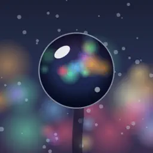
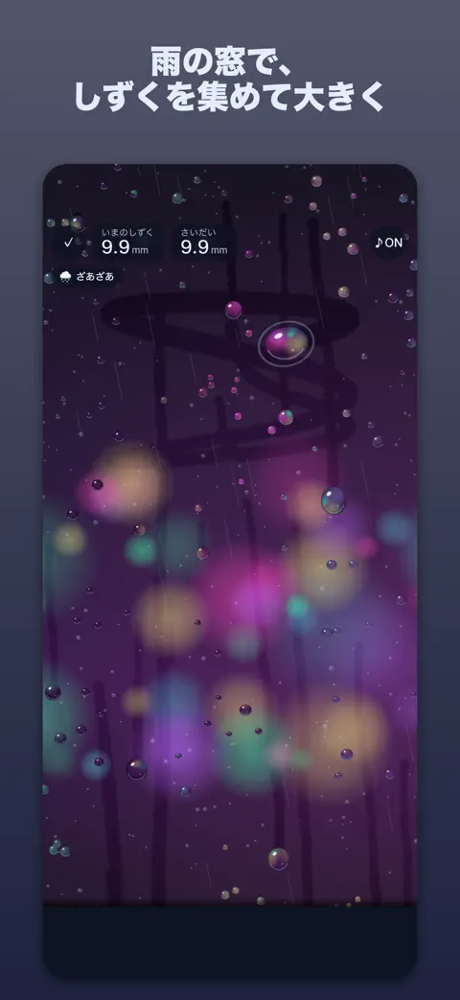
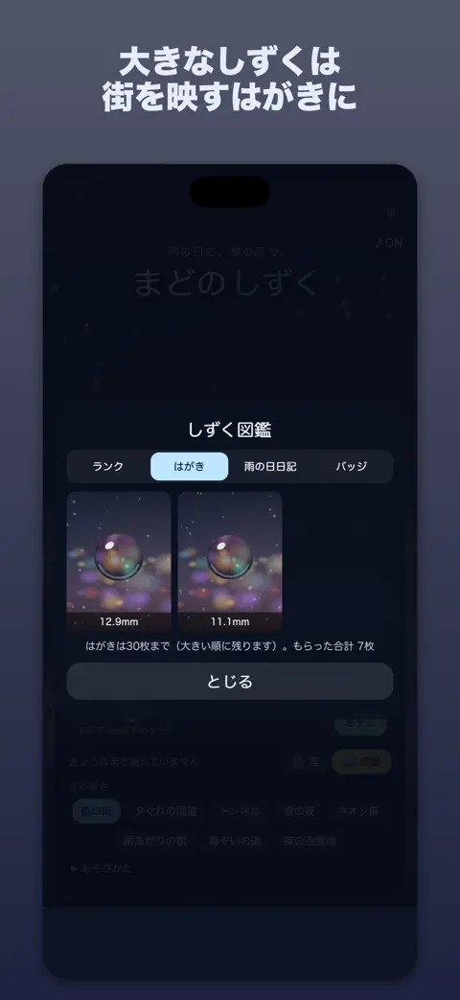

雨の窓の、のんびりゲーム（iPhone）
まどのしずく
雨の窓で、
しずくをのんびり大きく。
雨の日の車の窓。ぼやけた街のあかりを見ながら、指でしずくを集めて大きくする、のんびりゲーム。眠る前の雨音タイマーにも使えます。
App Store で無料ダウンロード無料・広告あり／iPhone（iOS 18 以降）
▶ プレイのようす（音なし）
まどのしずくとは？
まどのしずくは、雨の日の車の窓で、指でしずくを集めて大きくする、のんびりゲーム。5つの雨と12の景色、眠る前に使える雨音のタイマー、60秒チャレンジのランキングつき。無料（広告あり）のiPhoneアプリ。
- 料金無料・広告あり
- 対応iPhone（iOS 18 以降）
- ジャンルのんびり




60秒チャレンジで、みんなとくらべる
- いちばん大きいしずく60秒でどこまで大きくできるか。ときどきワイパーがやってきます。
- くっつけた合計くっつけたしずくの合計でもくらべられます。「今週」と「ぜんぶ」。
- 名前を決めるだけサインインはいりません。ニックネームを決めるだけで参加でき、記録はいつでも消せます。
遊ぶのに通信はいりません。ランキングは、名前を決めて通信できるときに使えます。
こんな人におすすめ
- 雨の音や、雨の日の景色が好きな人
- 寝る前に、静かに画面をながめたい人
- 自分のペースで、ゆっくり遊びたい人
遊び方は3ステップ
- なぞる窓をなぞると、水が集まってしずくになります。
- くっつけるほかのしずくにぶつけると、くっついて大きくなります。
- そっと大きいしずくは重く、速く動かすとちぎれます。下のふちに着くと流れ落ちます。
ルール
なぞって集める
窓をなぞると、水が集まってしずくになります。
くっつけて大きく
ほかのしずくにぶつけると、くっついて大きくなります。
そっと動かす
大きいしずくは重く、速く動かすとちぎれます。下のふちに着くと流れ落ちます。
60秒チャレンジ
60秒でどこまで大きくできるか。ときどきワイパーがやってきます。
特徴
- 5つの雨霧雨・こぬか雨・しとしと・ざあざあ・夕立
- 12の景色大きいしずくを作ると増えていく
- 15〜90分ねむれる雨音だんだん小さくなって止まるタイマー
- 16のバッジしずく図鑑・はがき・雨の日日記
さいきんのアップデート
バージョン 1.0.9（2026年11月19日）
- 広告が出ないときに、ほかのアプリの紹介を出すようにしました
- 12月1日から25日まで、雪の窓で遊べます
- タイトルの「あそびかた」に「振動」のオン・オフを入れました。オフにすると、ブルブルしなくなります
- はじめて遊ぶときの説明を入れました
- どのモードがむずかしいかを知るため、名前のない遊びの数だけを集めるようにしました（あそびかたでオフにできます）
ことばの説明
- ランキング
- ニックネームと記録だけでくらべるしくみ。サインインなし、いつでも消せます。 くわしく
くわしい遊び方
雨の日の車の窓を指でなぞって、水を集めてしずくにします。ほかのしずくにぶつけるとくっついて大きくなります。
- 5つの雨：霧雨・こぬか雨・しとしと・ざあざあ・夕立から選べます。強い雨ほどしずくは早く育ち、流れも速くなります
- 大きいしずくは重い：速く動かすとちぎれます。下のふちに着くと流れ落ちます
- 60秒チャレンジ：60秒でどこまで大きくできるか。ときどきワイパーが来ます（窓の上のほうは届きません）
- のんびりモード：時間なし・ワイパーなし。左上の ✓ で終わって記録を見られます
- ねむれる雨音：雨の窓と雨の音を流すだけのモード。15〜90分のタイマーで、だんだん小さくなって止まります。画面を消しても雨音は続きます
- 音のミキサー：雨・窓にあたる音・かみなり・車のエンジン・オルゴールの音量を自分で決められます
- 窓の景色：大きいしずくを作ると、夕ぐれの国道・トンネル・雪の夜・ネオン街、雨あがりの朝・海ぞいの道・夜の遊園地の景色が選べるようになります
- しずく図鑑：ランク・しずくに映る街のはがき・雨の日日記・バッジ16個が見られます。毎日ちがう「今日の雨」もあります
よくある質問
雨の音を流せる癒やしアプリは？
まどのしずくには、雨の音を流して画面をながめる「ねむれる雨音」があり、15〜90分のタイマーで、だんだん小さくなって止まります。雨の窓でしずくを集めるゲームもあります。
無料ですか？
はい、無料でダウンロードして遊べます（広告あり）。App Store のページからどうぞ。
どの端末で使えますか？
iPhone（iOS 18 以降）で使えます。Android 版はありません。
音を消したい・変えたい
画面右上の ♪ ボタンで、音のオン・オフを切り替えられます。音のミキサーで、雨やかみなりなどの音量を一つずつ変えられます。
ねむれる雨音を途中で止めたい
画面をタップして、左上のボタンで止められます。タイマーが終わると自動で止まります。
新しい景色が選べない
景色は、自己ベストのしずくの大きさ（11mm・16mm・22mm・29mm）で増えていきます。タイトル画面の 🔒 に、必要な大きさが書いてあります。
記録を消したい・引き継ぎたい
記録はこの iPhone の中にだけ保存しています。アプリを削除すると記録も消えます。ほかの端末への引き継ぎにはまだ対応していません。
ランキング（バージョン1.0.1以降）
60秒チャレンジのいちばん大きいしずくを、ニックネームでみんなとくらべられます（Game Center のサインインはいりません）。ランキングにのせた名前と記録は、ランキングの画面のいちばん下「ランキングから自分の記録を消す」でいつでも消せます。ふさわしくない名前は、各行の「…」から通報できます。
お問い合わせ
不具合やご要望は、メールでお知らせください。お使いの iPhone の機種と iOS のバージョンを書いていただけると助かります。